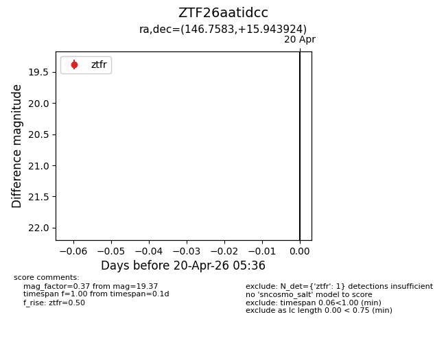
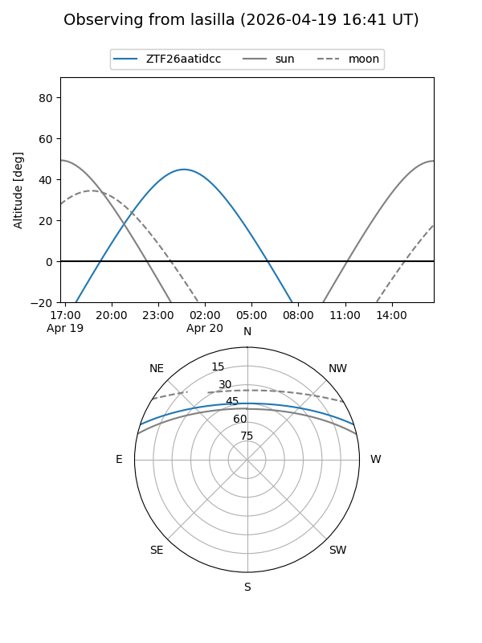
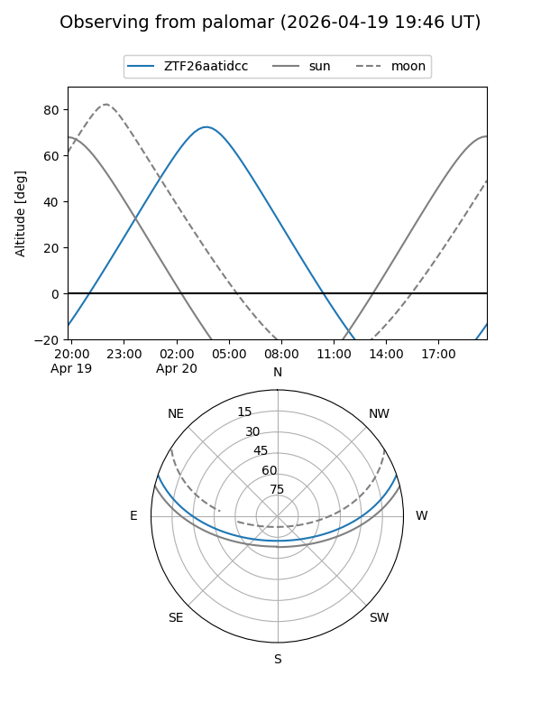

ZTF26aatidcc
Target ZTF26aatidcc at 2026-04-20 05:47
Aliases and brokers:
FINK: link
Lasair: link
ALeRCE: link
alt names
ZTF26aatidcc (ztf,fink_ztf)
Coordinates:
equatorial (ra, dec) = 146.7583,+15.94392
equatorial (HMS+DMS) = 09:47:01.99,+15:56:38.13
galactic (l, b) = (217.8431,+45.94096)
Flags:
Photometry:
last ztfr=19.37
1 ztfr detections
Lightcurve

Visibility


Additional plots